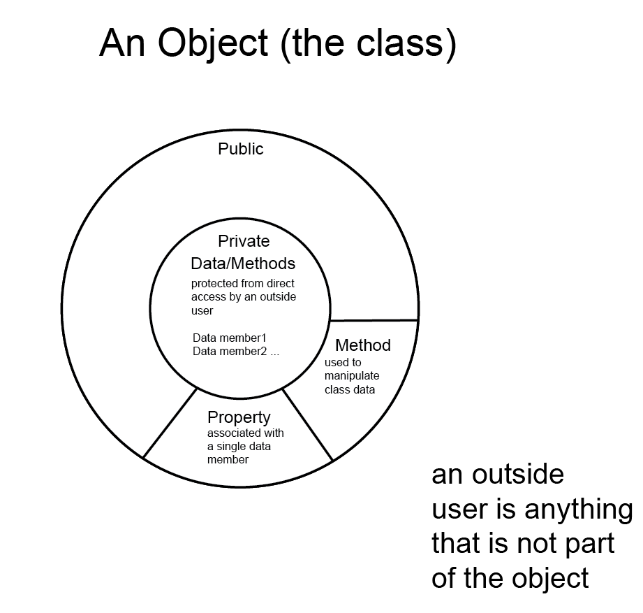

Lesson Plan: Day 2
Objectives:
Discuss:
- What is an object?
- The Class and its components.
- Properties Fully Implemented vs Auto implemented
Code:
- Create a Visual Studio solution using a console application.
- Create a class: Die
Resources: Student
- Moodle site.
- Object Review topic:
- Url Programming Fundamentals: An Object-First Approach in C#
- doc. Visual Studio Projects
- ppt: Introduction to Visual Studio
- pdf: OOP Basics
- pdf: The ABCs of Classes and Objects
- Resources: Instructor
- Lesson 1: Review of coding an Object definition: Die
Concepts:
- An object: Class vs Instance
- Encapsulation of data
- Private vs Public
- The outside user
- Properties
- Get
- Set
- Constructor
- Methods

Coding:
- Create a new visual studio solution: OOPsBasicReview
- Create a console application: OOPsConsoleDriver
- Create a class: Die
public class Die
{
//create a new instance of the math object Random
//this will be shared by each instance of Die
//the instance of the Random object will be created when the
//first instance of Die is created
private static Random _rnd = new Random();
//data member is required for the fully implemented property
private int _Sides;
public int Sides
{
get
{
//the get is used on the right side of an assignment operate
// used in an expression
//this is the sending of a value from the object instance to
//somewhere else
return _Sides;
}
private set
{
//the set is used to assign an incoming value to the data memeber
//it is used on the left side of an assignment operate
//the key word --> value <-- contains the incoming data value
//you can do validation within the set to check the domain of
//your data
//to indicate an error used throw new Exception(" your message")
//the set can be private which means that the data member
//can only recieve a value from within the object instance
//itself via a constructor or a method (behaviour)
_Sides = value;
}
}
//auto implemented property
//no data member is explicitly declared for this property
public int FaceValue { get; private set; }
private string _Color;
public string Color
{
get
{
return _Color;
}
set
{
//test if the string is null or empty
if (string.IsNullOrEmpty(value))
{
//there are two options that you can do here
//a) Throw an exception if the color is a required value
throw new Exception("You must supply a color");
//b) set the private member to null if the
// property is nullable
//_Color = null;
}
else
{
_Color = value;
}
}
}
//constructor
//optional, if not supplied then the system default contructor
// is used which will assign a value to your data member that
//corresponds to the datatype default
//you may have any number of constructors
//if you code a constructor, you become responsible for all constructors
//two typical constructors are the default and greedy
//NOTE: CONSTRUCTORS DO NOT HAVE A RETURN DATATYPE
//default constructor mimics the system default
public Die()
{
//this constructor would be used when no values are
//supplied at the time of instantiation
// public Die theDice = new Die();
//you can override the system datatype values by supplying
//your own default values
SetSides(6);
Color = "White";
}
//greedy constructor usually is setup to recieve a value for all
//data members in your the object definition
public Die (int sides, int facevalue, string color)
{
//it is a good practice to use the properties to assign
//values to data members
// public Die theDice = new Die(6,1,"White");
SetSides(sides);
FaceValue = facevalue;
Color = color;
}
//Behaviours (methods)
//a method to allow the user to change the number of sides (faces)
//of the die
//subroutine no return value; datatype void
public void SetSides(int sides)
{
if (!(sides == 6 || sides == 12))
{
throw new Exception("Invalid number of sides for the die");
}
else
{
Sides = sides;
Roll();
}
}
public void Roll()
{
//will be used to generate a new facevalue for the instance
//the method in Random called .Next(inclusive lowest range value,
// exclusive higest range value)
FaceValue = _rnd.Next(1, Sides + 1);
}
}